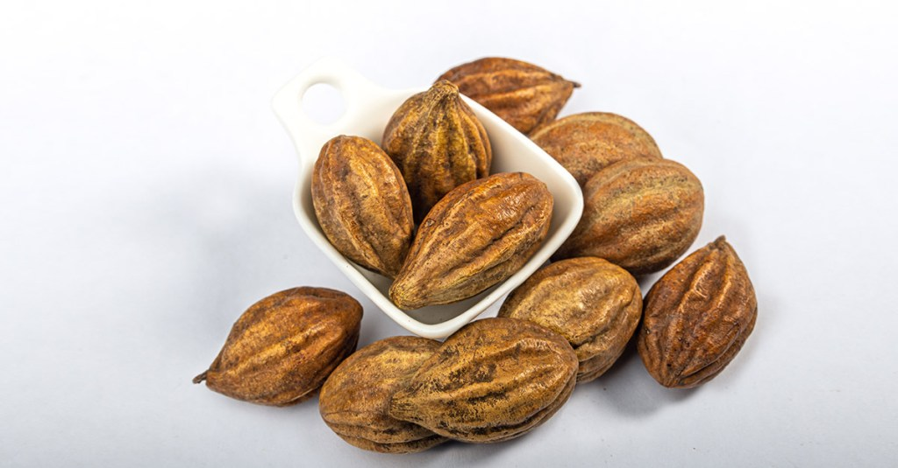

Yellow Myrobalan
−
1
+
Yellow myrobalan – Rs.330/100gm
Support our locals who are working on the agricultural fields throughout day and night to protect our natural foods and herbs. Buy now.
Product Description
Testimonials
Terminalia chebula is a tree in the Combretaceae family, found wild in the forests of India and surrounding countries at high altitudes, that produces a fruit known as a myrobalan. The herb is known as Haritaki, Chebulic myrobalan, Bihara, and Harada in different dialects, and is one of the three fruits found in the traditional formulation of Triphala. It is named Haritaki after ‘harita’, which means green, and because it is sacred to Lord Shiva, known as ‘Hara,’ and grows in the Himalayas where Lord Shiva was thought to reside. Haritaki is a very important herb in Ayurveda, thought to promote fearlessness, feed the brain and nervous system, and bring awareness and wisdom. The Buddha is often portrayed in Tibetan sacred pictures with a Haritaki fruit in his hand. Chebulic myrobalan is used as a bowel regulatory tonic and gentle laxative in Traditional Ayurvedic Medicine. It has emollient properties and bitter principles that encourage peristalsis and proper digestion. It contains five tastes: sour, sweet, pungent, bitter, and astringent, with the most predominant being bitter and astringent. It is considered balancing for all three doshas (constitutions), but especially rejuvenative to the vata dosha, which is associated with air and movement.
Yellow Myrobalan
The excellent hypoglycaemic property of haritaki plays a significant role in alleviating the blood sugar levels of the body. The production of insulin from the β-pancreatic cells becomes active in taking this wonder fruit. It helps to reduce the breakdown of starch into glucose. Hence, regular usage of haritaki powder effectively brings down the blood glucose levels and relieves from various diabetic symptoms like frequent urination, excessive thirst, weight loss etc. Haritaki is a traditional remedy for improving gut health and treating a wide range of gastrointestinal disorders like esophagitis, heartburn, diarrhoea, flatulence, peptic ulcer, gastroesophageal reflux disease, indigestion, constipation, flatulence and stomach pain. The carminative nature of the fruit helps in breaking down the food particles in the stomach and intestine, enhances the secretion of the digestive juices and thereby increases the absorption of essential nutrients through the intestines. It helps to eliminate abdominal gas and in turn reduces abdominal distension.